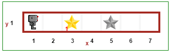

Warning
This document is in the middle of a major revision. Some sections might be missing text, or have French text as placeholder.
파이썬을 배우는 것은 리보그와 함께라면 쉬워요. Learning Python is easy with Reeborg. All you have to do is read the tutorial and try all the examples in Reeborg’s world. I suggest that you keep the tutorial and Reeborg’s World both open but in separate windows or tabs.
Before you actually start the tutorial, have Reeborg take its first step by running a program in Reeborg’s world.
Hints are clickable and designed to provide useful pointers if you are not sure how to proceed.
Hint
Go to Reeborg’s world, click on the “run” button (small white triangle on blue background) and watch Reeborg takes its first step. You can also view this short video to see what it looked like ... in a slightly older version. You may want to watch it in full screen with HD quality selected.

Student using Reeborg’s World in California, USA.
Reeborg’s World has been designed for you!
The idea I had in mind when I created Reeborg’s World was to create a friendly place to learn programming concepts. While it is possible to use Javascript, the “normal” language of the web, as a programming language to make Reeborg work, I’ve decided to focus on Python which is a more versatile language and one that is easier to use by beginners and advanced programmers alike.
This tutorial was first written for you and help you learn computer programming. However, I have also included some information for teachers as well as other users of Reeborg’s World. You can ignore such additional information without worrying that you are missing something important as you are learning programming concepts.
This document has been divided into nine major parts.
If you click on any of the above part title, you will be taken to a page with a more detailed table of contents for that part.
For educators

Two books (red for teacher, blue for students) produced by Samsung Korea based on RUR-PLE, the desktop program precursor to Reeborg’s World.
Reeborg’s World had been strongly inspired by Richard Pattis’s Karel the robot. Three programming languages (Python, Javascript and CoffeeScript) can be used to control the virtual robot. However, this tutorial is focuses on Python which is my favourite programming language and that many consider to be an ideal language to teach programming concepts to beginners.
In this tutorial, I postpone the introduction of variables as long as possible, and do the same for function arguments. This approach reflects that of Pattis’s original Karel which did not have any variables. This is the focus of the first two main parts of this tutorial, namely Basic tutorial and Recursion.
Reeborg’s World has been created with the goal of simplifying Pattis’s idea as much as possible, while still making it possible to introduce very advanced programming concepts. So, instead of the “simple” first program found in some tutorials supposedly aimed at complete beginners:
public class HelloWorld {
public static void main(String[] args) {
System.out.println("Hello, World");
}
}
the simplest valid program in Reeborg’s World is:
move()
That’s it: a single instruction. What could be simpler when teaching beginners?
However, one is not limited to simple functions.
For example, if one wants to use an OOP approach instead,
the simplest valid program, which has Reeborg actually do the
equivalent to the single move() instruction above, is:
reeborg = UsedRobot()
reeborg.move()
Similarly, because using standard libraries is something useful, students
can first learn about libraries by writing their own code and, in doing so,
they learn that library modules are just programs like any others.
Assuming they have defined a function, say turn_right(), in their library,
the following program will be valid:
from library import turn_right
turn_right()
So, the idea is to have the student deal with as few concepts as possible to write programs, only learning new concepts (such as using variables, or Object-Oriented notation, or importing code from a library) after they have learned the basics. One guiding principle in writing this tutorial has been to introduce only one programming concept at a time.
However, the simplicity of the approach used in Reeborg’s World does not mean that what can be done is limited to the basics of the virtual robot world. The Python version of Reeborg’s World is based on Brython, and includes many Python modules found in Python’s standard library which can be used to write advanced programs.
Task Driven Learning
Reeborg’s World is designed for Task Driven Learning: students are given tasks that Reeborg has to complete, and they must write programs instructing Reeborg how to do so.
Tasks include having Reeborg move objects, build walls, or go to a particular location. Objects in Reeborg’s World are colourful; the places they be must moved to by Reeborg are indicated by having a picture of the object in shades of grey.
If you have some examples (particularly tasks for Reeborg) that you find useful for your students, I would appreciate if you could share them with me so as to improve this tutorial.
Free
Reeborg’s World is free: free to use, free to copy (and put on a school’s website), and does not require any registration or login. Unlike some other existing code learning website, it does not force learners to follow a pre-defined path; educators are free to create their own learning material while making use of Reeborg’s World.